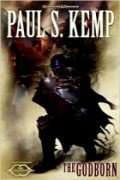

The Godborn
Écrit par Paul S. Kemp, publié en Octobre 2013.
AVERTISSEMENT
Cette page révèle certaines informations qui pourraient gâcher la lecture du roman. Si vous pensez lire ce livre dans un futur proche, mieux vaut ne pas parcourir ce résumé !
1450. Pourtant aidée par un paladin d'Amaunator, une femme meurt dans l'abbaye de la Rose, cachée au sein des Thunder Peaks, en mettant au monde un nouveau-né demi-shade qu'elle prénomme Vasen. En effet, le père de l'enfant, Erevis Cale, est un shadovar.
1484. Sembie, un état aujourd'hui vassal du Netheril et de ses shadovars, est en guerre contre le Cormyr et les Vaux. La vénération de tout culte autre que celui de Shar y est hors-la-loi et une sorte de nuit perpétuelle enveloppe le royaume ; le soleil ne perce plus. Le dieu Mask est mort depuis longtemps et trois personnes se sont partagés son essence divine : Erevis Cale, Rivalen Tanthul et Drasek Riven, chacun devenant alors un demi-dieu. Erevis Cale, maintenant prisonnier des glaces de Cania, a dû livrer sa part de divin à Méphistophélès, le seigneur de la huitième strate des enfers. Rivalen Tanthul, grand prêtre de Shar, est le premier des douze princes de Pénombre. Haït par son frère cadet Brennus, car il a tué sa mère sur ordre de sa déesse, il s'efforce de terminer le Cycle de la Nuit, qui mettra fin à Toril, pour le compte de Shar. Riven demande lui à son ami tieffelin Magadon, lui-même fils de Méphistophélès, d'être prêt à le rejoindre prochainement dans la cité détruite d'Ordulin.
Arrive cette année là le moment pour Vasen, maintenant paladin d'Amaunator, de reconduire aux Vaux avec trois compagnons tous les pèlerins qui sont clandestinement venus visiter le légendaire oracle de l'abbaye dont il est le gardien. Parmi eux se trouve un deva, Orsin, l'un des derniers fidèles de Mask. L'oracle, une fois seul, enlève alors toutes les protections qui ont permis à l'abbaye de rester à l'abri des détections naturelles et magiques durant des siècles. En route, le groupe doit affronter un veserab et deux espions shadovars, dont l'un parvient à s'échapper. Et trois jours après leur départ, la colonne des pèlerins arrivent au village de Fairlem. Celui-ci a été décimé par Sayeed et Zeeahd, deux frères maudits qui servent Méphistophélès et qui, accompagnés de treize gros chats, parcourent la Sembie à la recherche de l'abbaye secrète. Lorsqu'ils sont arrivés au village, ils ont repéré un vieil homme avec un médaillon de l'abbaye de la Rose et l'ont forcé à leur indiquer le chemin.
Mis au courant de tout ce qui s'est passé par un survivant, Gerak, et au fait du but des deux frères, Vasen et Orsin décident de retourner immédiatement porter secours de l'oracle. Gerak les accompagne également. Sayeed et Zeeahd, qui une fois leur chemin trouvé se sont débarrassés de leur guide, arrivent à l'abbaye plus au moins au même moment qu'eux, et l'affrontement inévitable a alors lieu. Les deux frères se révèlent être des bone devils et les chats des spined devils. Les protagonistes parviennent à se débarrasser momentanément d'un des diables mais, en infériorité, ils sont finalement contraint de battre en retraite dans le bois avoisinant. L'oracle est tué.
Pendant ce temps, l'espion shadovar qui est parvenu à s'échapper lors du combat contre Vasen est revenu à la cité volante de Sakkors et raconte les faits à Brennus. Ce dernier, spécialiste de la divination, est chargé par son père, le grand prince Telamont Tanthul, de découvrir des Élus afin de pouvoir les interroger et essayer de comprendre les changements récents qui affectent le monde. Grâce aux éléments qui lui sont fournis par son espion, et maintenant que les protections ont été levées, Brennus parvient à identifier où se trouve l'abbaye et, accompagné d'une douzaine de ses hommes, il se téléporte sur place. Brennus sait que Vasen lui permettra de mettre à mal son frère Rivalen. Mais au moment où le cadet des princes shadovars tombe sur Vasen et ses amis, Rivalen apparaît. Les trois compagnons en profitent alors pour s'échapper de nouveau, en utilisant un portail qui les amène dans le Shadowfell aux côtés de Riven. Ayant fait fuir Brennus, Rivalen s'en prend ensuite aux spined devils et les détruits, sentant la main de Méphistophélès derrière leur présence. Face aux deux frères, il convainc Sayeed de tuer Zeeahd et termine ainsi avec un nouvel allié.
Riven annonce alors à Vasen qu'il doit aller à Cania, dans les enfers, pour délivrer son père, et ensuite aller à Ordulin, là où réside Rivalen, car il est la clé pour ôter l'essence divine des trois demi-dieux. Alors Mask reviendra et le Cycle de la Nuit de Shar sera stoppé. Mais il faut faire vite car déjà les légions de Méphistophélès sont aux portes de la forteresse des ombres de Riven, le seigneur de la huitième strate des enfers comptant bien récupérer toute l'essence divine qu'il lui manque afin de devenir un vrai dieu et pouvoir ainsi affronter Asmodée. Le plan est exécuté et, pendant que Riven et ses dizaines de milliers de morts-vivants du Shadowfell combattent Méphistophélès et ses dizaines de milliers de diables, Vasen et ses deux compagnons délivre son père.
Le groupe des quatre se retrouve ensuite à Ordulin, face à Rivalen, et quelques instants plus tard ils sont rejoints par Riven qui amène avec lui Méphistophélès. Vasen entre alors en action et parvient à extraire l'essence divine des trois demi-dieux face à lui. Le diable, grièvement blessé, se dématérialise et retourne aux enfers. Rivalen, qui a sacrifié Sayeed, meurt avec son frère Brennus écrasé par la cité de Sakkors qui tombe. Reste Riven, qui en quelque sorte se sacrifie pour concentrer de nouveau toute l'essence divine en une seule personne : le dieu Mask est de nouveau vivant !